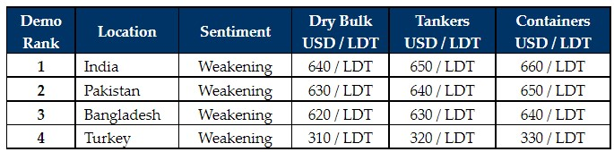

inWeekly Demolition Reports16/05/2022

It has been a woeful week across all of the major ship recycling markets, with some tumultuous declines leading to minimal interest and offers on any available tonnage.
It increasingly seems as though it may be a much softer summer given prevailing sentiments, especially as prices ease back towards the (still impressive) USD 650s/LDT mark.
Most of the deals concluded at USD 700/LDT (or above) were always seen as precariously positioned, and it remains to be seen whether End Buyers will be happy to dip back into the buying at these comparatively lower levels, given the global state of depreciating currencies and declining steel fundamentals.
The currencies in Pakistan, India, and even Turkey, remain much cause for concern to those domestic markets – especially as they continue to gradually trudge towards (or have already passed) record highs agains the U.S. Dollar.
Steel plate prices have also suffered severely in Turkey & India with India down by almost USD 45/LDT over the course of the last couple of weeks and Turkey down by about USD 120/Ton, as these markets continue their beleaguered run week after week, leaving End Buyers at these locations extremely reticent to offer on fresh tonnage.
Turkey remains the worst placed with a USD 90/MT plummet in levels post-Eid. Even (ex-market leaders) Bangladesh remain on the sidelines post-Eid and there is little hope of receiving any serious offers any time soon from either market who appear down and out.
In keeping with global stock markets this past week, all major global recycling markets remain decidedly nervy and seem only to be heading down.
For week 19 of 2022, GMS demo rankings / pricing for the week are as below.

📄 Download PDF: 2022-05-16XTP_org.pdfSource: GMS,Inc. ,https://www.gmsinc.net/gms_new/index.php/web